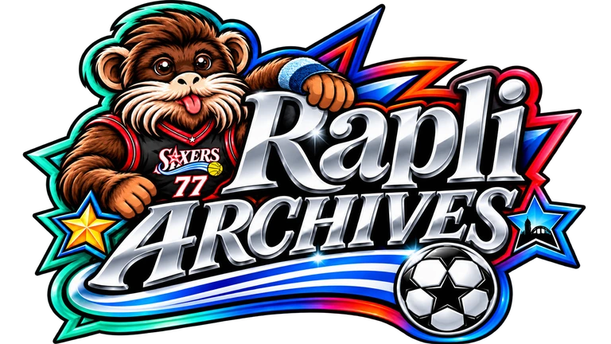

RAPLI LAB · JERSEYS
COLLECTION DE MAILLOTS
Les logos des équipes et des compétitions sont partagés avec Rapli Sports. Un écusson historique peut être choisi automatiquement selon la saison du maillot.
Connexion à la bibliothèque de logos Sports…
COMPÉTITION
 —
—
JOUEUR
10
APERÇU · AUCUN MAILLOT ENREGISTRÉ
Les équipes, les compétitions et leurs variantes historiques restent administrées dans la bibliothèque de Rapli Sports. Les futures fiches Jerseys pourront enregistrer leurs références sans dupliquer les images. Aucune donnée Sports n’est modifiée ici.